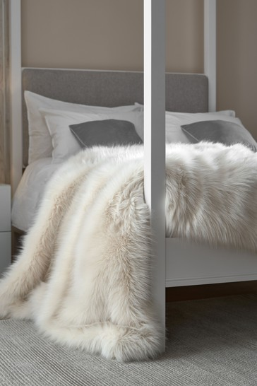
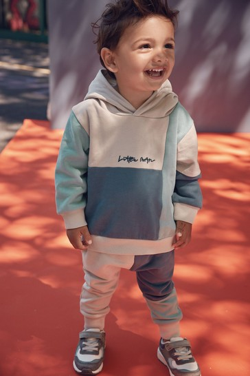
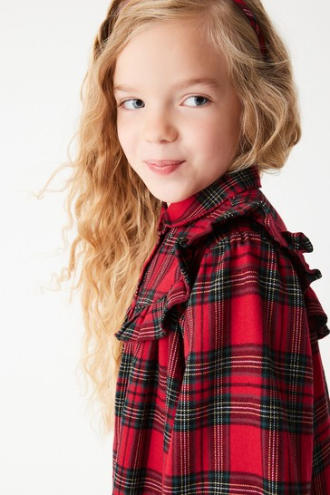
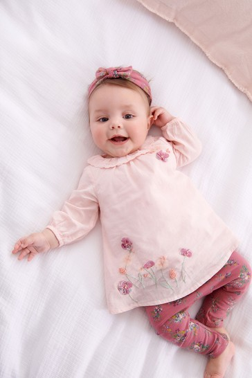
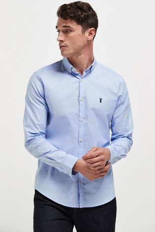
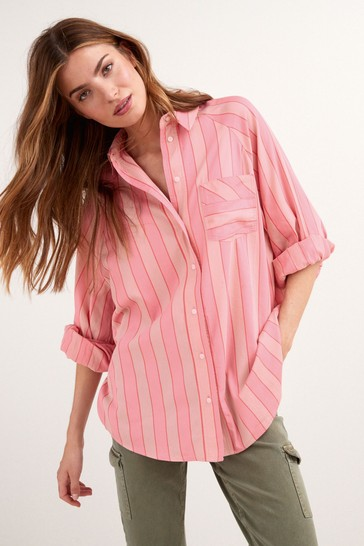

Newly arrived in household products

Long artificial fur cover
Washable in the washing machine.
face 85% acrylic, 15% polyester. Back face 100% polyester.
The covers are non-fire resistant and should not be used as loose covers for upholstered furniture.
Boys' clothes

This combed sports kit from the back is made of 280 g fine cotton per square meter,
consisting of a hooded jacket and easy-to-wear sports trousers in opposing colours.
Jacket and sports pants 100% cotton.
Girls' clothes. | New design

This beautiful dress is made of fine comb cotton fabric.
Ruffle detail from the front, wide dressing, layers and pistons to close from the front.
It looks great with colons and bots for a casual look perfect for everyday life.
100% cotton.
MY FIRST WARDROBE

This kit includes an embroidered personal t-shirt, tight trousers and a headbar.
Designed with nickel-free pistons to close up to 12 months for easy wear.
Washable in the washing machine.
Tonic 100% cotton. Tight trousers and headbar 95% cotton, 5% Elsten.
Designs for the new season.

Light blue
98% cotton, 2% elsten.
Women are casual.

Washable in the washing machine.
100% cotton.
100% cotton is very nice.
Very nicet .
Fast and great delivery.